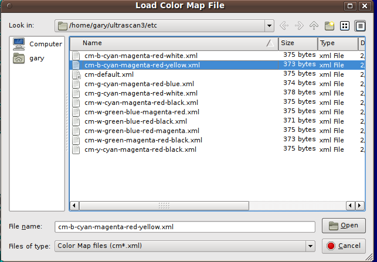

Manual
Manual
Manual
Manual
Some UltraScan III applications load a color map from a file using a file dialog.

The file to load is selected from the ./etc directory and is generally of a "cm_*.xml" form. It represents a color gradient in the form of a color map. If no file is selected, a default map is used. Otherwise, a file as created by US_ColorGradient should be selected.
The file naming convention is as follows: